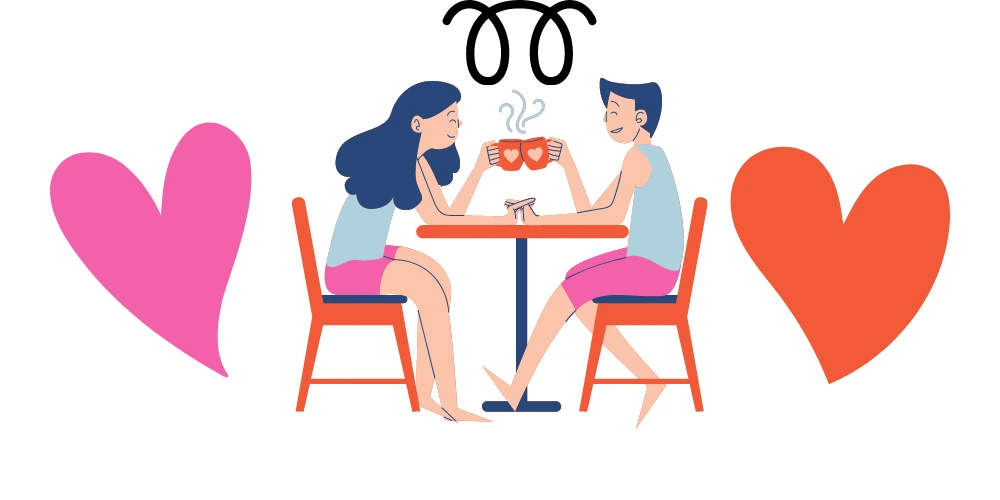
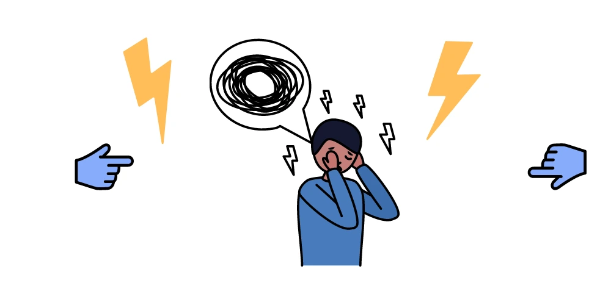

Can someone who suffers from OCD have healthy relationships? Yes, of course. However if left untreated, can an unstable mental health condition affect our happiness? In fact, research shows that OCD can affect relationships. But, how? Truth is, any type of mental health disorder can affect our relationships with others. Depending on our issues and the level of our anxiety, things can become unstable. If you have OCD, you must know that your symptoms can often get in the way of living and managing relationships. Indeed, many individuals with OCD are single. Those who are in a relationship or married often report relationship stress. However, being in a relationship with an OCD partner can also make the partner feel helpless and can lower their self-esteem.
Are you feeling sad, lost and feeling empty? This can happen to anyone. Sadness can be immense for those who suffer from mental instability. It is important to know that for people who suffer from OCD, often the feeling of sadness and tension is very real.
OCD surfaces through obsessive learning, performing rituals of activities with no clear reason. Hence, these unaddressed mental health issues often create problems in relationships. Therefore, it is important for everyone to understand how can OCD affect relationships.
Furthermore, It often takes a lot of understanding and patience to live with an OCD partner. But still, there is hope. It is important to know that Mental health disorders including OCD can be treated. Still, with the help of mental health care professionals, one can win the fight against obsession, compulsiveness and repetitiveness of the slightest action or deed.

OCD in Australia
Truly, if left untreated, OCD has the capacity to conquer every aspect of a person’s life. It affects everything, from how you live, how you work, and how it affects the people you live with. Hence, here are some facts we have gathered from Sane Australia’s website.
- Firstly, there is no ‘typical’ OCD behaviour. The symptoms and features of OCD can differ greatly.
- Secondly, around 2% of people in Australia have OCD.
- Thirdly, obsessive-compulsive thoughts and behaviours often appear in childhood or adolescence.
- In briefly, people who suffer from OCD have a higher risk of developing other types of mental disorders.
Compulsive behaviour can take up some time. It can impact normal day-to-day activities. A person with OCD may find the need to keep washing their hands every time they touch something. To sum up, people suffering from OCD are usually aware of their behaviours and know they are excessive. This can cause shame, forcing people to keep their condition secret. The sooner people with OCD seek effective treatment, the closer they are to regaining control of their mental health.
Obsessive-compulsive disorder and relationships: How it Affects?
People who are in relationships with an OCD partner often find themselves having to often change because of their partner. Concerns about locks or germs can become a point in everyday communication between the couple. Although OCD does cause challenges to maintain a relationship if you have knowledge on how OCD affects relationships, there are ways to cope.
OCD is associated with a variety of thought processes which then results in certain behaviour or actions. Some of the thought processes people with OCD can identify with are:
- Certain behaviour and thoughts become uncontrollable.
- Subsequently, the mind can only be appeased by performing rituals.
- Next is the feeling of being safer by performing rituals becomes apparent.
- Reassurance from others may not have lasting effects.
- Ultimately, a person with OCD can exaggerate situations, thinking of the worst.
- Inevitably, ongoing anxiety or uncertainty is not acceptable or bearable.
Therefore, obsessive-compulsive disorder including the associated compulsions can have devastating effects on a person. Here are some damaging effects OCD can afflict on people’s lives:
- Physical damage from washing and cleaning compulsions (red and raw bleeding skin. Eye damage)
- Substance abuse
- Neglect of other aspects of life
- Impacts on work and relationships

Relationships with OCD partner: How to Deal?
Someone who experiences OCD should have their condition managed by a health professional, preferably diagnosed by a psychiatrist or psychologist. Treatment should ideally be broad-ranging and a variety of interventions trialled. It’s important the partners are educated about the condition, try to understand how OCD can affect relationships, affects the OCD partner and the other. Also, seek their own supports. Open dialogue can be beneficial. Often psychologists can use behavioural strategies to help partners support their loved ones.
Support groups provide an environment where people with OCD can learn more about the condition. As a direct result, there’s a chance to meet with others. Therefore, there’s a chance to share experiences and to provide support. Information is provided, along with self-help and coping strategies. Understanding and acceptance by family and friends are often important for OCD sufferers. In sum, How can OCD affect relationships?
Finding Stability with OCD
Ultimately, if we are feeling weighed down by deep thought, perhaps it is time to find professional mental health care help? Similarly, if a face-to-face consultation with a psychologist or a psychiatrist is unavailable in your area, telehealth mental service is a good option for you.
It is important to learn and understand how can OCD affect relationships. Therefore, at present, there are professionals who offer online psychiatry or online psychology telehealth service in Australia. It is important to note that there are telehealth mental health care providers who bulk-bill clients who live in remote areas. Secondly, only trained mental health professionals can diagnose OCD. Thirdly, professional help is often beneficial in long term recovery. Moreover, it is highly encouraged we seek help for mental health in general. We encourage you to reach out to your local doctor if you have concerns about potential OCD. They will then be able to direct you.